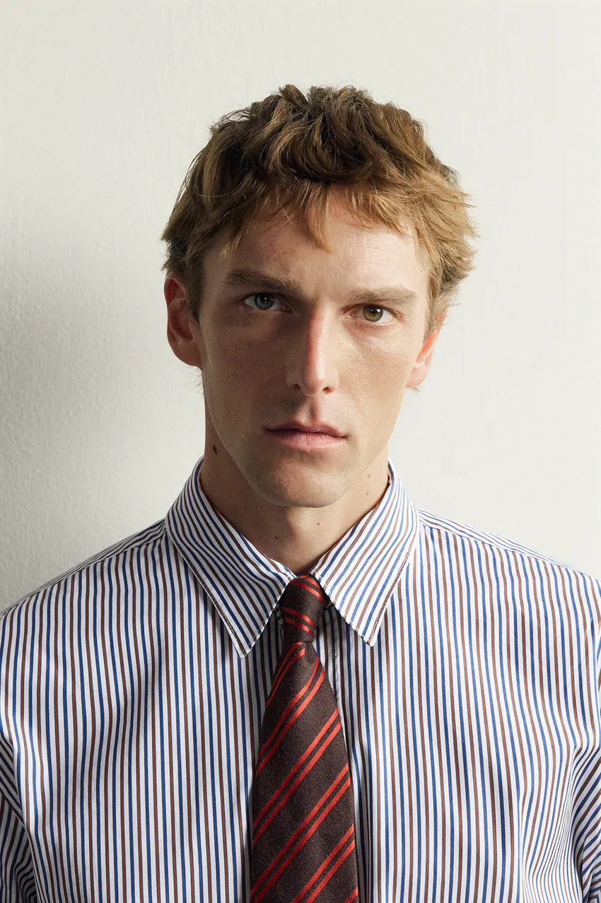
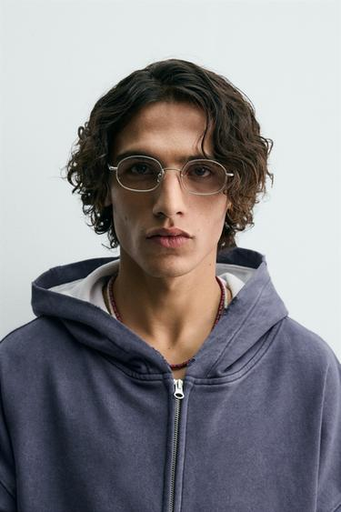
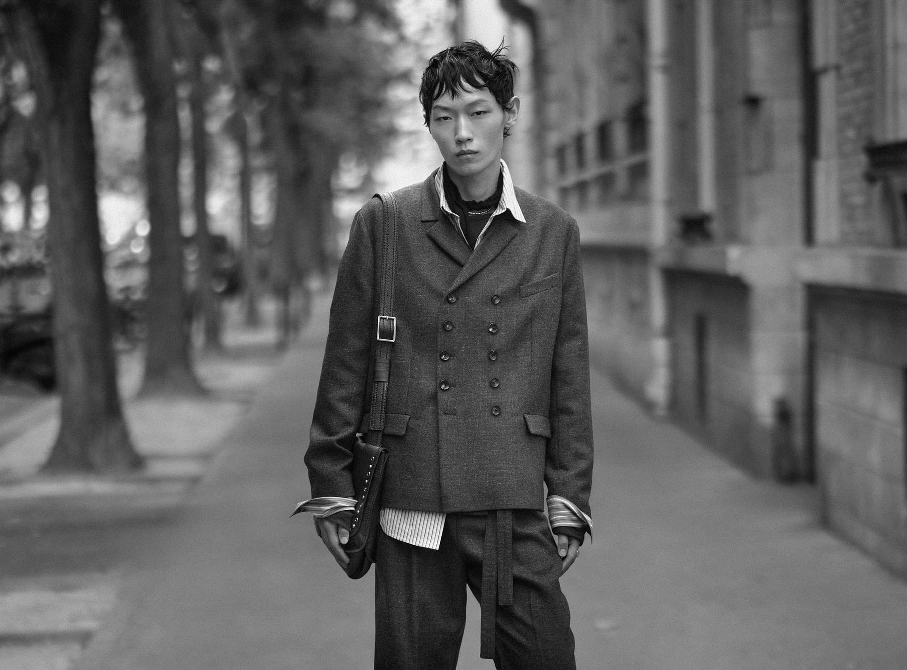

发型会改变脸周围的形状：两侧头发蓬开，头部显得更宽；顶部抬高，整体轮廓向上延伸；刘海落下来，又会遮住一部分额头。穿着同一件衬衫，换一种头发的走向和蓬松程度，人物也可能从整齐、收敛，转向柔和、随意。
因此，选发型可以先看三个具体问题：希望头部形成什么轮廓，眉眼露出多少，头发怎样与衣领和肩部连接。下面结合四张 ZARA 男士造型图，分析这些变化怎样发生，再把照片中的观察转成日常可以使用的选择方法。
先看轮廓，再看发型名称
“寸头”“碎发”“侧分”“中长发”描述的并不是同一个维度。寸头主要说明长度，碎发强调发梢与层次，侧分说明方向，中长发则只给出了大致的长度范围。一款短发也可以有侧分、碎发和明显的蓬松感。
轮廓是从稍远处看，头发与背景之间形成的外边界。 先不看每一根发丝，只看顶部的高低、两侧的宽窄、后脑的弧度，以及耳朵和颈部露出多少。专业剪发会通过不同区域的长度与衔接控制形状；Sassoon 的男士剪发教学也把短发轮廓、层次和长度连接作为基本内容。Sassoon：男士剪发教学介绍
两侧剪短，顶部保留较多长度，可以形成上方较集中、耳侧较轻的轮廓。两侧与顶部都保留弯曲和蓬松度，头发则像围住脸的一圈柔软边缘。两者的区别，不只是长短，还在于体积被放在什么位置。
这里的“体积”指头发在视觉上占据的空间，不等于发量。相同的发量，吹起发根、改变分缝或梳顺压低，呈现出的体积就会变化。也不能仅从一张照片断定人物的实际发量。
额头是另一个重要部分。刘海覆盖较多时，头发与眉毛之间的距离缩短，眉眼上方容易形成较集中的暗部；把前部头发拨开，额头进入画面，眉毛与发际线便能分别被看见。露额头并不会自动让人“成熟”，它首先改变的是面部上方的可见面积和线条关系。
侧分则增加了方向：一侧露得多，一侧留下发束，原本接近对称的头部出现偏移。想让发型有变化，不一定先改变长度，先调整分缝位置和前发走向，就能观察到这种差别。
短碎发与衬衫领带：整齐中保留松动

图一：短发仍有明显的方向和高低变化。图源：Aaron Levine × ZARA 羊毛真丝混纺条纹领带官方商品图。
图中最先能看到的，是头发并没有被梳成一整片平整表面。顶部几组发束向不同方向抬起，发梢形成小幅起伏；前面少量头发落向额头，两侧也保留了一定长度。它属于较短、带纹理的造型，不能仅凭这张正面照，把它认定为某一种特定的渐变剪法。
“纹理”在这里指发束之间可辨认的分组、走向和明暗。顶部的浅色部分与发束缝隙里的暗部，使头发看起来有厚度，又没有形成一个完全封闭的圆帽形。这种细节让短发也能保留活动感。
衬衫则采用另一种秩序：领口扣合，领尖对称，领带沿胸前向下延伸。头发的边缘略有错落，衣服的中轴却很清楚。两种状态放在一起，产生了“穿着认真，但没有把每一处都整理得非常规整”的感觉。
假设把头发完全梳平，并建立一条清晰分缝，领口、领带和头发就会共同加强整齐程度。若把刘海放得更厚，遮住更多额头，眉眼上方又会多一块较重的区域。这些是对形状关系的比较，不是说哪一种更高级；选择取决于希望这套穿着显得多么正式。
这张图可以借鉴的，是让短发保留适量起伏，同时维持耳侧和额前的清楚边界。日常穿衬衫、细针织或简单夹克时，也可以用相同思路观察：头发是否需要一点松动，来调整衣服已经很明确的线条。
蓬松卷发与宽领上衣：柔软来自哪些地方

图二：头发外缘的不规则弧线，与宽领口、下落的肩部一起形成较柔软的形象。图源：ZARA 金属吊坠绳项链官方商品图。
这张照片的头发比上一张更向外展开。顶部有明显抬起的发束，耳侧也有弯曲，外轮廓由许多小弧线组成。额头中央仍然露出，头发主要聚集在上方与两侧，没有把眉眼全部围住。
卷曲在这里有两个作用。一是发梢方向不完全一致，减弱了整齐直线的感觉；二是发束之间留有空隙，背景可以在边缘穿插，使轮廓显得有透气的间隔。照片能说明这些可见效果，却不能说明卷曲是天生的、烫出来的，还是拍摄前临时整理的。
如果只把这种感觉归结为“卷发显得松弛”，仍然漏掉了衣服。棕色上衣肩部下落，领口较宽，布面没有形成强硬的折角。头发的弧线与衣服的柔软边缘相互配合，人物上半身因此比较舒展。
与此同时，黑色高腰长裤形成较完整的深色区域，腰部收束也很明确；项链把注意力带回领口。整套造型有松开的部分，也有集中、清楚的部分。如果头发、领口、肩部和裤腰都同样蓬大，画面可能出现更多体积，原有的主次便会改变。
对日常穿着而言，蓬松度可以按位置调整。希望保留卷曲但不让头部显得过宽，可以与发型师讨论耳侧的体积；希望增加上方的起伏，则要看顶部有没有足够长度，以及自己的头发能否维持这种方向。把“我想松弛一点”进一步说成“卷度保留，耳侧少一点体积，额头不要全部遮住”，通常更容易沟通。
中长波浪发与眼镜：眉眼附近需要留出位置

图三：中长发提供外围的体积，细镜框在内部增加少量线条。图源：ZARA 银色椭圆款眼镜官方商品图，款号2907/409/808。
图中的波浪发沿额角和耳侧垂落，长度使弧线得以连续转折。它与图二共同具有弯曲感，但图二更向上、向外展开，这张图则更明显地围绕脸的两边延伸。因此，即使都可以被叫作“卷一点的头发”，头部比例也并不相同。
前发向两边分开，额头中央留下可见区域。镜框位于眉眼之间，细金属边缘与较深的头发形成粗细差别：外围是一片有体积的头发，内部是一组细线。眼镜能够被看见，又没有形成与头发同样厚重的一圈边界。
如果在这套关系中换成厚重、低垂的刘海，再加入粗黑框，眉毛附近就可能同时出现刘海、眉毛和镜框三组深色线条。有人喜欢这种集中的分量；如果希望表情更清楚，则可以从刘海长度、露额面积或镜框粗细中先调整一项。
蓝灰色连帽上衣还在颈部两侧形成了体积。头发也停留在接近耳朵的位置，所以肩颈附近有多层曲线。图中衣服轮廓宽松，头发并没有被要求梳得很紧，两者延续了相近的柔软感。若改穿高领和厚围巾，就需要重新观察耳后、后颈是否显得过于集中，或在实际活动中发生摩擦、翘起。
中长发的关键因而不只是“留长”。长度会落在哪里，前发是否挡住视线，戴眼镜时耳侧怎样连接，都需要一起考虑。选照片作参考时，一张露出耳侧和领口的图，往往比只展示刘海的特写更有帮助。
短发与叠穿外套：整齐不必从头到脚保持一致

图四：ZARA STUDIO 2026秋冬男士系列。摄影：Julien Martinez Leclerc；图源：ITX Japan 官方发布资料。
这张图里的短发更贴近头部，前部发束向额头落下，局部又向外翘起。额前边缘并不齐平，顶部也没有梳成平滑、连续的弧面。与图一相比，它保留了更多向下的、不规则的细节。
双排扣上衣本身有明确结构：翻领、纽扣与口袋把上半身组织起来。领口却露出不同衣层，袖口向外翻，衬衫下摆也没有全部收好。头发的小幅错落与这些衣物边缘呼应，整套造型显得已经进入日常活动，而没有停留在刚整理完毕的状态。
这种解读也与该系列的公开说明相合：品牌通过比例和叠穿，让熟悉的男装带有较放松、仿佛经过穿用的感觉。这里的发型是其中一部分，不能单独承担整个人物的“不拘谨”。照片中的站姿、衣料、露出的衣角和街头背景也共同发挥作用。
黑白处理让发色的影响减弱，发束与背景的明暗、头部与衣领的边界变得更容易比较。但照片里某处较暗，可能同时受光线影响；有集中发束，也不足以证明用了哪一种发蜡或发油。可以借鉴它的轮廓和方向，不必据此推测后台的造型配方。
这套关系适合拿来思考一个常见问题：穿外套时是否一定要把头发梳得很正式？只要头发的体积和边界受到控制，保留一点方向变化，也能与结构明确的衣服配合。正式程度可以分布在不同位置，不必让头发、领口、袖口同时达到一样的规整程度。
哑光、光泽与后梳，改变的是另一层效果
前面的四张图已经能看出，长度接近的短发也可以有不同表面。发束分得开、反光较分散，容易看见细小纹理；梳理方向集中、表面较亮，视觉重点则可能落在连续的走向和明亮区域上。
光泽与定型强度是两个不同指标。 American Crew 的官方产品资料中，Fiber 标注较强定型、较低光泽；Pomade 则标注中等定型、较高光泽。它们说明，“更亮”与“固定得更牢”不能直接画等号；日常选择也可以分别询问这两项。Fiber 产品说明、Pomade 产品说明
后梳首先改变前发方向，使额头与发际线更完整地露出。若发束贴近头部，外轮廓会较收敛；若先把前部吹高再向后整理，顶部仍可能有明显体积。所以，后梳也并不只有“油头”一种外观。
想让西装和衬衫显得集中、整齐，可以尝试较明确的分缝与走向；希望与针织、牛仔形成较柔和的关系，也可以保留后梳方向而降低表面光泽。反过来，光泽明显的头发与普通T恤搭配，也可能让头发成为造型重点。效果需要放回整套穿着判断。
产品名称只能提供起点。同样写着发蜡、发泥或发油，不同配方的表现仍可能不同；用量、干湿状态和自己的发质也会改变结果。与其先追问照片用了哪个牌子，更有用的是说明自己想保留的方向、蓬松度和光泽，再请发型师现场示范能重复的整理方法。
寸头是否更合适，要看希望露出什么
寸头让可供改变的头发长度减少，头部原有的形状、发际线、耳朵和面部线条会更直接地进入视线。它可以形成简洁、集中的外观，但不会自动改善所有人的比例，也不保证比其他发型更精致。
准备尝试时，可以先从三个位置观察：顶部是否还希望保留高度，两侧是否需要一定宽度，后脑是否希望用长度形成弧线。如果自己偏爱头发向上抬起后的轮廓，全部剪得很短，就可能失去原先喜欢的那部分形状；如果喜欢眉眼完全显露、外边界接近头形，较短的长度便值得比较。
脸型提供的是调整方向。脸部较长，又不希望进一步强调纵向，可以比较顶部较低的造型；脸部较宽，希望减少耳侧的体积，可以比较两侧收敛一些的处理。但头发向上或向外的效果，还要结合发际线、后脑、肩宽与实际发质看，不能由“圆脸”“方脸”两个词直接给出唯一答案。
同样，留长也不意味着一定柔和。两侧向外蓬开、发色较深、边缘较厚的中长发，可能有很强分量；短发在发梢、方向和服装配合下，也可以显得温和。长短只是选择中的一个条件。
对于第一次尝试的人，保留一点可调整的长度，通常更便于与发型师逐步比较。把参考图中的顶部、耳侧和后颈分别说清楚，比只说“给我剪一个寸头”更能表达希望获得的轮廓。
把照片变成可以使用的沟通依据
看参考图时，可以先遮住脸部细节，只观察头发的外边界与衣服的肩线，再把视线放回眉眼。这样比较的是造型中的具体关系，而不只是模特本身是否吸引人。拍摄角度也要留意：低机位会改变头部与下颌的比例，侧光会加强发束明暗，不能把这些效果全部归给剪发。
实际选择还受到头发条件影响。直发、波浪发与卷发形成边缘的方式不同；细软或较硬的头发，维持同一高度所需的整理也可能不同。发旋与生长方向又会影响前发是否容易贴下或翘起。拿一张图给发型师时，需要让对方看过自己的头发，而不只是根据照片承诺复制。
可以把需求整理成一段具体的话：
我希望额头露出一部分，顶部有起伏但不要太高，两侧别明显向外蓬。平时会戴眼镜、穿衬衫和针织，耳侧与后颈希望清楚一些。日常愿意简单吹干整理，不想每天做很复杂的定型。请帮我判断这个轮廓在我的头发上怎样实现。
这段表达同时交代了形状、日常衣着与维护意愿。对方才能继续解释，需要保留哪些长度，哪些地方适合收紧，哪些照片效果需要额外造型。
剪完以后，除了看刚吹好的正面，也要看侧面和后脑，戴上常用眼镜，穿回自己的外套。还可以询问洗后怎样吹、先整理哪个区域、用多少产品。日常自己洗过一次、整理过一次，才更容易知道这款发型是否适合自己的生活。
借鉴 ZARA 造型时，最终需要带走的是这些能被说明的关系：顶部的高度怎样对应两侧的宽度，前发怎样露出眉眼，头发的表面怎样与衣服的线条和质感配合。能把喜欢的地方说清楚，照片才真正成为选择发型的依据。
留言
由 Disqus 提供。